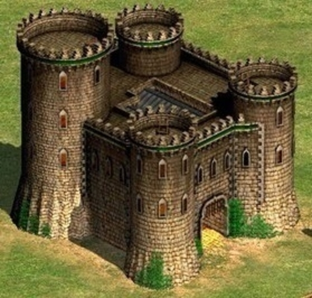

Сцена из игры Age of Empires II. Это описание обтекает изображение и располагается рядом, а не под ним.

Битва цивилизаций в Age of Empires II. Теперь текст обтекает изображение, создавая более гармоничный вид.

Средневековый замок в Age of Empires II. Это пример, как можно использовать обтекание, чтобы текст шёл рядом с изображением.